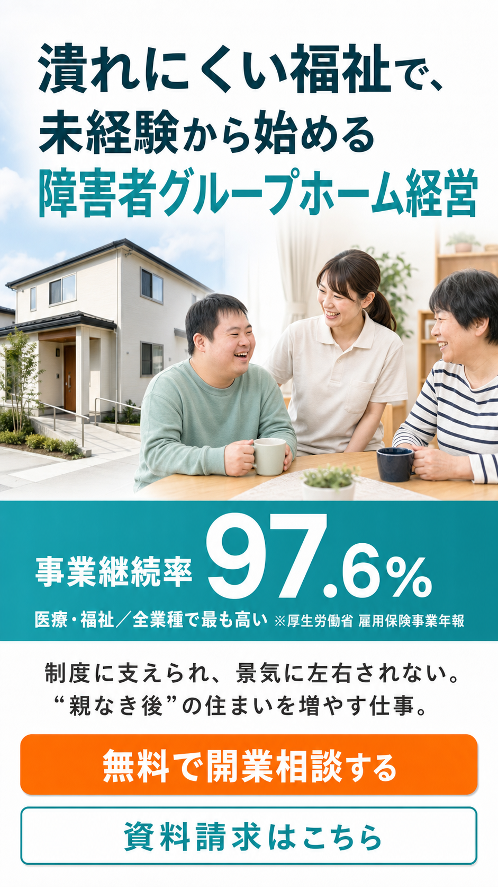

OWL広告｜新LP（独立起業向け）の改善3対応 ＋ 改善の兆し
2026/8/4 星崎 ※社内共有用（noindex・個人情報なし）
◆ 結論
昨日の問い合わせは既存LP（0円プラン）×Yahooから。新LPからは一度も問い合わせが無い。
新LPの原因は「入口(KW)×FV×お客様の声の位置」。この3つを直すのが次の一手。
改善の兆しあり：質の低い層が消えクリックは減ったが、新LPでも問い合わせアクション（CTA・モーダル）を確認。方向は正しい。
1. 現状スナップ
既存LP（0円）
問い合わせ 獲得
昨日はYahoo広告経由で資料請求。フォーム入力まで到達＝高インテント。確度A
新LP（独立）
問い合わせ 0件
見られてはいるが、CVに至らず。原因は下記3点。確度A
2. やるべき3つの対応（新LP）
1
「起業 福祉」から派生キーワードを作る
単に絞るのではなく、広い1語から具体的な関連キーワードへ枝分かれさせて、質の高い顕在層を拾う。現状は「起業 福祉」など広いワードしか無い。
現状：起業 福祉／起業 介護 の1語だけ → 障害者GH 開業／障害者GH 経営 未経験／共同生活援助 開業／グループホーム 開業 費用 …と派生を拡充
2
ファーストビュー（FV）を変える
金額先行（自己資金・年商）で不信・ハードルを生んでいる。
現状：金額を最上部に大きく → 「潰れにくい福祉（継続率97.6%）×未経験から」を主役に

改修後FVイメージ（モック）
3
お客様（オーナー）の声を上部へ
今は声がページ下部にあり、ほとんど読まれる前に離脱。既存LPは声が中盤にあり到達率が高い。
現状：声はページ後半 → 中盤より上に移動（読まれる位置へ）
①の中身：設定推奨キーワード（「起業 福祉」の派生・結果が出そうな順）
| キーワード | 種別 | メモ |
|---|
| A. 本命の核（まず必ず入れる） |
| グループホーム 経営 | 本命 | ★Yahooで資料請求CV実績 |
| 障害者グループホーム 経営 | 本命 | ★優良クリック実績 |
| 障害者グループホーム 開業 | 本命 | ★優良クリック実績 |
| グループホーム 開業 | 本命 | ★クリック実績あり |
| 障がい者グループホーム 開業／経営 | 本命 | 表記ゆれ対応 |
| 共同生活援助 開業 | 本命 | ★開業意図が強い |
| B. 派生・掛け合わせ（質の高い顕在層を拾う） |
| 障害者グループホーム 開業 費用 | 派生 | 費用を今調べている層 |
| 障害者グループホーム 経営 未経験 | 派生 | FV「未経験から」と一致 |
| グループホーム 開業 資金／初期費用 | 派生 | 資金を検討中 |
| 共同生活援助 指定申請 | 派生 | 開設手続きを調べる濃い層 |
| 障害福祉 開業／障害福祉 独立 | 派生 | 「福祉で独立」の具体化 |
「お客様の声」まで到達した割合（同程度のページ位置で比較）
※Clarityスクロール実測からの概算 確度B。新LPは声が下すぎて、届く前に離脱している。→ 声を上げれば読まれる。
3. 改善の兆し（前進しています）
・検索パートナー除外で質の低い層が消え、クリック数は減少（＝無駄打ちが止まった）。
・その上で新LPでも「問い合わせアクション（CTAタップ・申込フォーム起動）」を確認。CVの一歩手前まで来ている。
・フォームは既存LPに統一済み（受け皿は同じ・計測も整備済み）。
4. 併せて：既存LP × Google広告を深掘り（別トラック）
既存LPは問い合わせが来ているが、Google広告はYahooより予算が大きい分、改善余地が大きい。
ここを深掘りして、費用対効果を引き上げます。